Al finalizar el tutorial el estudiante estará en capacidad de:
En particular se utilizarán los siguientes recursos:
Kubernetes es una plataforma portable y extensible de código abierto para administrar cargas de trabajo y servicios. Kubernetes facilita la automatización y la configuración declarativa. Tiene un ecosistema grande y en rápido crecimiento. El soporte, las herramientas y los servicios para Kubernetes están ampliamente disponibles. [1]
Kubernetes ofrece un entorno de administración centrado en contenedores. Kubernetes orquesta la infraestructura de cómputo, redes y almacenamiento para que las cargas de trabajo de los usuarios no tengan que hacerlo. Esto ofrece la simplicidad de las Plataformas como Servicio (PaaS) con la flexibilidad de la Infraestructura como Servicio (IaaS) y permite la portabilidad entre proveedores de infraestructura. [1]
Kubernetes no es una Plataforma como Servicio (PaaS) convencional. Ya que Kubernetes opera a nivel del contenedor y no a nivel del hardware, ofrece algunas características que las PaaS también ofrecen, como deployments, escalado, balanceo de carga, registros y monitoreo. Dicho esto, Kubernetes no es monolítico y las soluciones que se ofrecen de forma predeterminada son opcionales e intercambiables. [1]
Kubernetes ofrece los elementos esenciales para construir una plataforma para desarrolladores, preservando la elección del usuario y la flexibilidad en las partes más importantes.
Con ello en mente, Kubernetes:
Existen diversos proveedores que suministran un servicio para crear un clúster de Kubernetes en la nube, entre ellos, por ejemplo: Amazon Web Services (AWS) y su servicio Elastic Kubernetes Service, Google Cloud Platform (GCP) con su servicio de Kubernetes Engine y Azure con su servicio de Azure Kubernetes Service.
En este tutorial vamos a desplegar un clúster de Kubernetes mediante el servicio autoadministrado Google Kubernetes Engine con la configuración Autopilot.
Para este tutorial manejaremos el repositorio de calculadora-numeros usado en los tutoriales pasados, en caso de no tenerlo clonado aún, puede consultarlo en el siguiente enlace. Trabajaremos sobre la rama feature/kubernetes-sum, para ello cambie la rama del repositorio actual al respectivo hash del tag, para hacerlo ejecute en su terminal:
user@192 ~ % git checkout feature/kubernetes-sum
Acceda a la consola de Google Cloud Platform y habilite la siguiente API: Kubernetes Engine API. Para ello, haga clic en el panel de servicios y seleccione la opción: Kubernetes Engine bajo la categoría de PROCESAMIENTO.
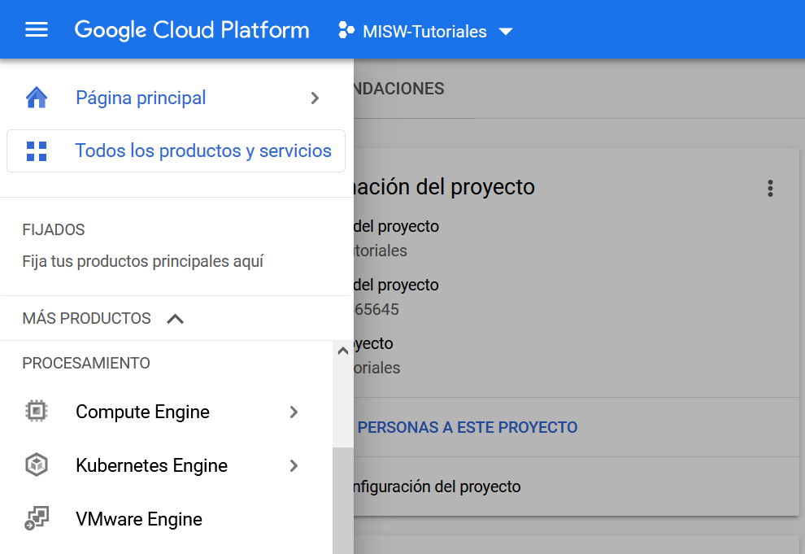
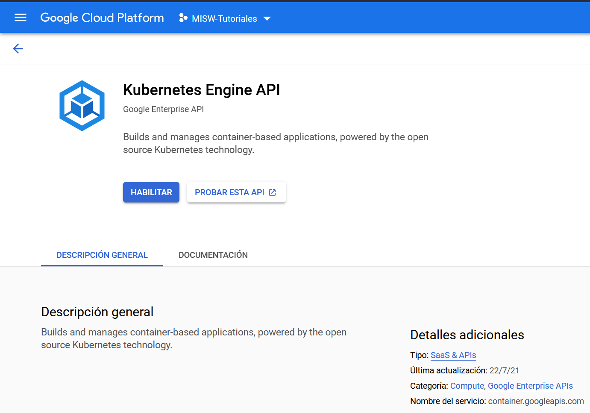
Tan pronto habilite las dos API, estaremos listos para desplegar el clúster de Kubernetes sobre el servicio Google Kubernetes Engine.
Para la conexión del cluster vamos a utilizar un red virtual de direcciones privadas. Las redes virtuales permiten la comunicación entre los componentes de Kubernetes y otras aplicaciones. Para crear la red utilice el siguiente comando en Cloud Shell.
Para crear una red virtual, el comando se ve de la siguiente forma:
user@192 ~ % gcloud compute networks create <RED> --project=<ID-PROYECTO> --subnet-mode=custom --mtu=<MTU> --bgp-routing-mode=regional
Donde:
Para el caso del ejemplo:
user@192 ~ % gcloud compute networks create vpn-tutoriales-misw --project=uandes-native --subnet-mode=custom --mtu=1460 --bgp-routing-mode=regional
Una subred, o subred, es una pieza segmentada de una red más grande. Más específicamente, las subredes son una partición lógica de una red IP en varios segmentos de red más pequeños. Para crear la subred que se utilizará en el cluster de kubernetes, ejecute el comando:
user@192 ~ % gcloud compute networks subnets create <NOMBRE-SUBRED> --range=<RANGO-IP> --network=<RED-PADRE> --region=<REGION> --project=<ID-PROYECTO>
Para el caso del ejemplo:
user@192 ~ % gcloud compute networks subnets create red-k8s-tutoriales --range=192.168.32.0/19 --network=vpn-tutoriales-misw --region=us-central1 --project=uandes-native
Ya con la API activa, vamos a desplegar el clúster mediante la consola de administración web de Google Cloud Platform. Para ello, en el menú de navegación del panel izquierdo seleccione la opción Kubernetes Engine y posteriormente la opción Clústeres.
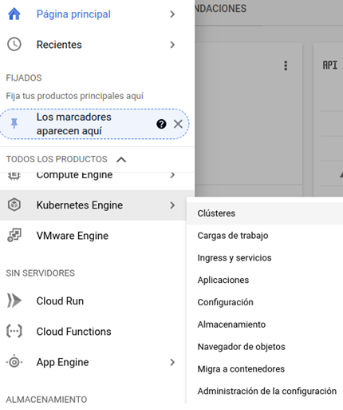
Seguidamente se desplegará una lista con todos los clústeres que se hayan creado. Para crear uno nuevo haga clic en la opción Crear y posteriormente seleccione la opción GKE Autopilot.
El servicio de Autopilot se encargará de administrar los nodos de trabajos de manera automática dependiendo de las necesidades de carga que se registren. Si desea consultar más información, por favor consulte la referencia [2].
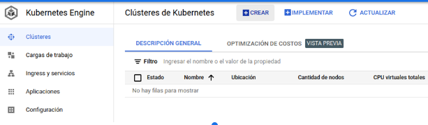
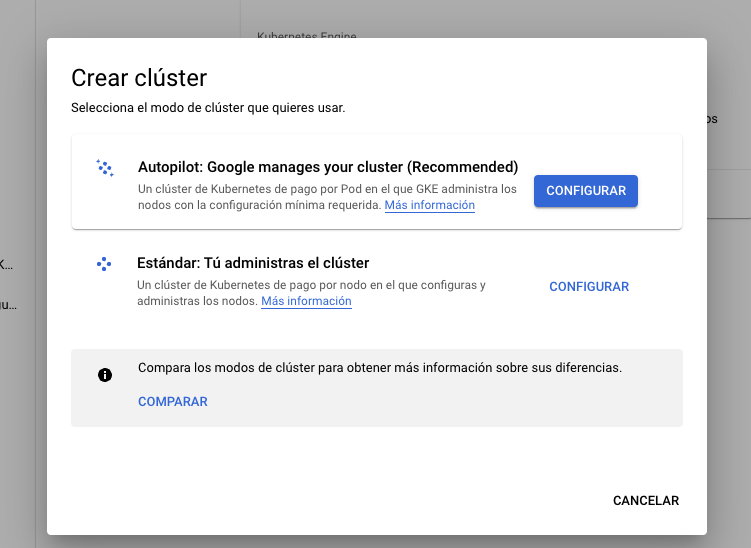
Seguidamente ingrese el nombre del clúster y configúrelo como un clúster público, en este ejemplo emplearemos como nombre de clúster uniandes-misw-cloud-native-k8s. Utilice las configuraciones de red de la segunda imagen.
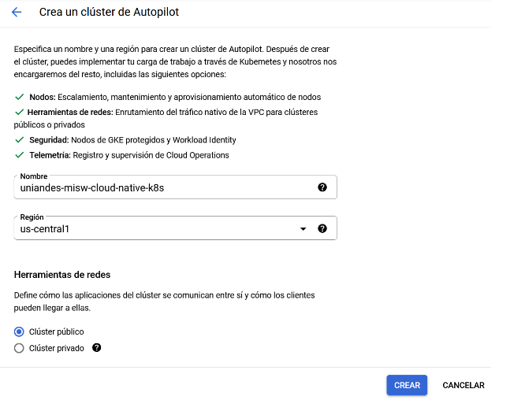
Utilice una configuración de red (Recuerde que estas redes se crearon en pasos anteriores) con la siguiente información:
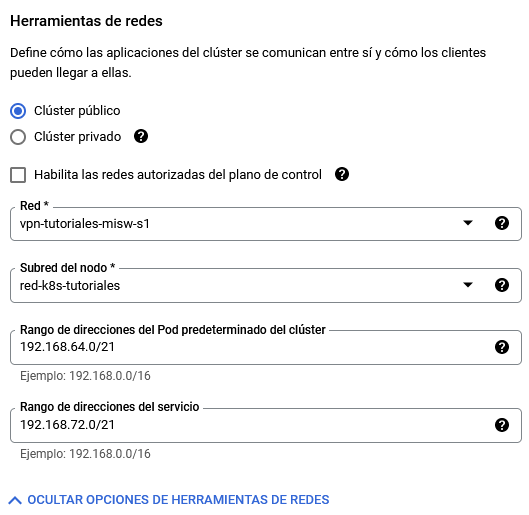
Finalmente, haz clic en el botón Crear. Con ello empezará a aprovisionarse el clúster, el tiempo de duración de este proceso es de aproximadamente 10 minutos.
Tan pronto el clúster se encuentre disponible podremos conectarnos a él mediante el SDK de gcloud. Para ello, despliegue el menú de opciones disponible sobre el nombre del clúster que creamos en la actividad anterior y seleccione la opción ESTABLECER CONEXIÓN. Posteriormente ejecute la instrucción de conexión en la terminal de su máquina haciendo uso del SDK gcloud.
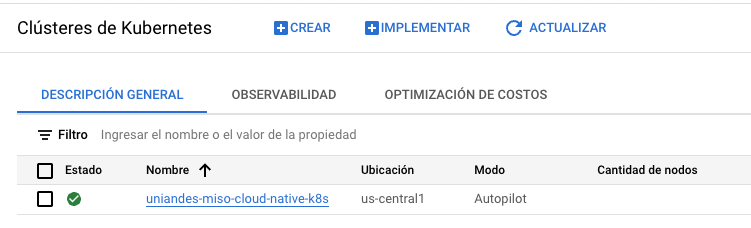
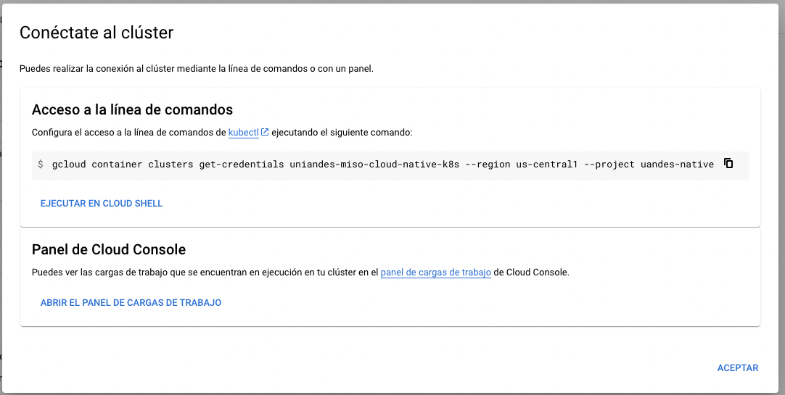
Al ejecutarlo localmente en su terminal debería ver lo siguiente:
user@192 ~ % gcloud container clusters get-credentials uniandes-misw-cloud-native-k8s --region us-central1 --project uandes-native
En el tutorial pasado sobre Container Registry construimos la imagen de contenedor de la aplicación y la almacenamos en un repositorio privado empleando el servicio Artifact Registry. En esta ocasión, vamos a desplegar el contenedor de la aplicación a partir de esa imagen. Para ello, ingrese al servicio Artifact Registry y copie la URI de acceso y el tag de la imagen.
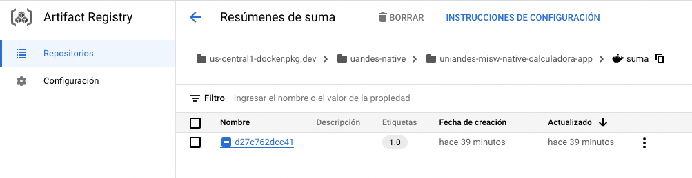
Posteriormente configure el archivo k8s-service.yml que se encuentra dentro de la carpeta suma cambiando el comodín <image> (ubicado en la línea 38) por la URI de su repositorio privado y el tag de la imagen.
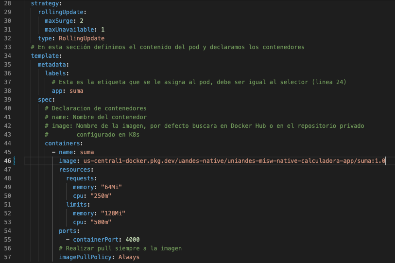
Antes de ejecutarlo, revisemos un poco su configuración.
Para culminar, construya el despliegue a partir del archivo yml ejecutando la instrucción:
user@192 ~ % kubectl apply -f k8s-service.yml
Este archivo contiene la definición de los contenedores que serán desplegados dentro de un pod así como la definición de los servicios para la comunicación de estos con otras redes y distribución de la carga entrante. Para verificar el estado de un despliegue puede emplear las instrucciones kubectl get pods, kubectl get services y kubectl get deployments.
Es un comando que se usa para recuperar información de un clúster de Kubernetes en su máquina local. Esto incluye todos los pods, implementaciones, servicios y ReplicationControllers.
user@192 ~ % kubectl get pods W1112 16:21:42.982225 9346 gcp.go:120] WARNING: the gcp auth plugin is deprecated in v1.22+, unavailable in v1.25+; use gcloud instead. To learn more, consult https://cloud.google.com/blog/products/containers-kubernetes/kubectl-auth-changes-in-gke NAME READY STATUS RESTARTS AGE suma-7d9454d9f5-x2bqc 1/1 Running 0 6m57s
Este comando muestra información asociada a los pods y el despliegue en sí de los servicios, puede ver información como la IP del cluster, el tipo de servicio, puertos, etc.
user@192 ~ % kubectl get services W1112 16:22:40.238125 9366 gcp.go:120] WARNING: the gcp auth plugin is deprecated in v1.22+, unavailable in v1.25+; use gcloud instead. To learn more, consult https://cloud.google.com/blog/products/containers-kubernetes/kubectl-auth-changes-in-gke NAME TYPE CLUSTER-IP EXTERNAL-IP PORT(S) AGE suma LoadBalancer 192.168.73.177
34.172.15.158
80:31632/TCP 32m kubernetes ClusterIP 192.168.72.1 <none> 443/TCP 5h16m
Este comando muestra información acerca de los despliegues, número de pods disponibles y cuantos de estos están corriendo, entre otros datos relevantes.
user@192 ~ % kubectl get deployments W1112 16:23:57.990528 9399 gcp.go:120] WARNING: the gcp auth plugin is deprecated in v1.22+, unavailable in v1.25+; use gcloud instead. To learn more, consult https://cloud.google.com/blog/products/containers-kubernetes/kubectl-auth-changes-in-gke NAME READY UP-TO-DATE AVAILABLE AGE Suma 1/1 1 1 9m12s
Si desea leer mas al respecto consulte el siguiente link https://kubernetes.io/docs/reference/kubectl/
En caso de errores con el despliegue revise el estado de sus pods con los comandos
user@192 ~ % kubectl describe pod <nombre del pod> user@192 ~ % kubectl logs <nombre del pod> --all-containers user@192 ~ % kubectl get events
Note que al ejecutar el comando kubectl get services, se obtuvo una IP externa, esta corresponde al balanceador de carga que es el punto de entrada a los pods contenidos dentro del cluster. En el caso del ejemplo corresponde a 34.172.15.158, corriendo en el puerto 80. Para probar que el despliegue está funcionando, identifique su IP externa y reemplazarla en el siguiente curl:
user@192 ~ % curl --location --request POST 'http://<IP-BALANCEADOR>:<PUERTO>/suma' \
--header 'Content-Type: application/json' \
--data-raw '{
"num_1": 399,
"num_2": 1
}'
Para el caso del ejemplo corresponde a:
user@192 ~ % curl --location --request POST 'http://34.172.15.158:80/suma' \
--header 'Content-Type: application/json' \
--data-raw '{
"num_1": 399,
"num_2": 1
}'
Obteniendo el resultado:
{
"message": "Estudiante la suma de los dos numeros es: 400",
"result": 400
}
Puede observar el despliegue, entrando a la consola de GCP en el servicio Kubernetes Engine > Cargas de trabajo
¡Éxitos en el desarrollo del tutorial y nos vemos en una próxima oportunidad!
[1] «Qué es Kubernetes», [Online]. Disponible en:https://kubernetes.io/es/docs/concepts/overview/what-is-kubernetes/ .
[2] «Descripción general de Autopilot | Documentación de Kubernetes Engine | Google Cloud». [Online]. Disponible en:https://cloud.google.com/kubernetes-engine/docs/concepts/autopilot-overview